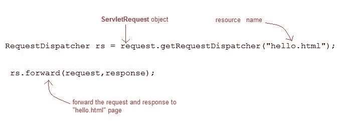
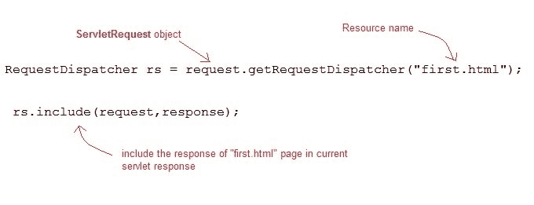
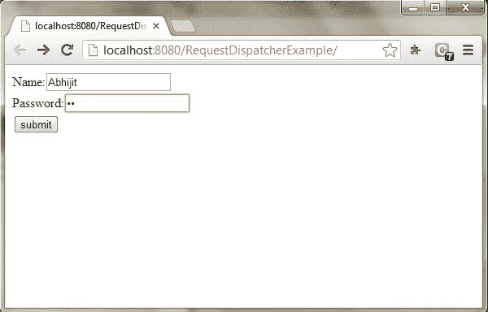
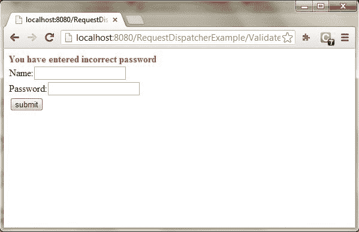
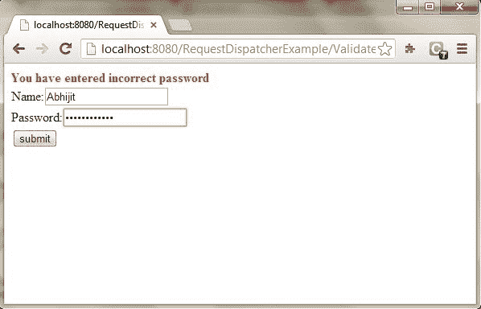
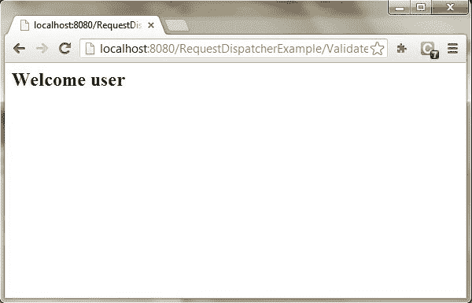

Servlet 中的RequestDispatcher
原文：https://www.studytonight.com/servlet/request-dispatcher.php
在 Java 中，RequestDispatcher 接口用于将请求分派给资源，即 Html、servlet 或 JSP。另一个资源的内容可以包含在这个界面中。RequestDispatcher 有两种方法。它们如下:
Servlet:请求调度器的方法
RequestDispatcher 接口提供了两个重要的方法
| 方法 | 描述 | | 公共 void forward(ServletRequest 请求，ServletResponse 响应)引发 ServletException，java.io.IOException | 它用于将请求从服务器上的一个 servlet 转发到另一个 servlet。 | | public void include(servlet request 请求，ServletResponse 响应)抛出 ServletException，java.io.IOException | 它用于在响应中包含资源的内容。 |
forward()方法:

include()方法:

Eclipse 上 forward()和 include()方法的示例
使用 forward()和 include()方法创建程序时，下面是程序的目录结构:

以下是创建程序的步骤。
第一步:通过点击文件= >新建= >动态网页项目在 eclipse 上创建一个动态项目

第二步:现在创建一个 HTML 文件。
右键单击项目，然后单击 HTML 文件。给出文件名，然后点击完成按钮。

并写出下面的代码。
Index.html
<!DOCTYPE html>
<html>
<head>
<meta charset="ISO-8859-1">
<title>studytonight</title>
</head>
<body>
<form align="center" action="display" method="post">
<h3>studytonight.com</h3>
<hr>
Name: <input type="text" name="val1"><br> <br>
User Id: <input type="text" name="val2"><br> <br>
Password: <input type="password" name="val3"><br> <br>
<input type="submit" value="login">
</form>
</body>
</html>
步骤 3:现在在 web.xml 文件中添加下面的代码。
web.xml 文件是一个部署描述符。这里有所有的配置。
<?xml version="1.0" encoding="UTF-8"?>
<web-app xmlns:xsi="http://www.w3.org/2001/XMLSchema-instance" xsi:schemaLocation="http://xmlns.jcp.org/xml/ns/javaee http://xmlns.jcp.org/xml/ns/javaee/web-app_4_0.xsd" id="WebApp_ID" version="4.0">
<display-name>forward</display-name>
<servlet>
<servlet-name>demo5</servlet-name>
<servlet-class>forward.demo5</servlet-class>
</servlet>
<servlet>
<servlet-name>demo5i</servlet-name>
<servlet-class>forward.demo5i</servlet-class>
</servlet>
<servlet-mapping>
<servlet-name>demo5</servlet-name>
<url-pattern>/display</url-pattern>
</servlet-mapping>
<servlet-mapping>
<servlet-name>demo5i</servlet-name>
<url-pattern>/display1</url-pattern>
</servlet-mapping>
<welcome-file-list>
<welcome-file>index.html</welcome-file>
</welcome-file-list>
</web-app>
步骤 4:现在接下来创建一个 servlet。为此创建一个类。给出包名和类名。
对于这个例子，我们需要两个 servlet 类。


现在在类文件中添加下面的代码。
演示 5.java
package forward;
import java.io.*;
import javax.servlet.*;
import javax.servlet.http.*;
public class demo5 extends HttpServlet {
public void doPost(HttpServletRequest request, HttpServletResponse response)
throws ServletException, IOException {
response.setContentType("text/html");
PrintWriter out = response.getWriter();
String n=request.getParameter("val1");
String u=request.getParameter("val2");
String p=request.getParameter("val3");
if(p.equals("studytonight"))
{
RequestDispatcher rd=request.getRequestDispatcher("display1");
rd.forward(request, response);
}
else{
out.print("Incorrect UserId or Password");
RequestDispatcher rd=request.getRequestDispatcher("/index.html");
rd.include(request, response);
}
}
}
演示。java
package forward;
import java.io.*;
import javax.servlet.*;
import javax.servlet.http.*;
public class demo5i extends HttpServlet {
public void doPost(HttpServletRequest request, HttpServletResponse response)
throws ServletException, IOException {
response.setContentType("text/html");
PrintWriter out = response.getWriter();
String n=request.getParameter("val2");
out.print("Welcome "+n);
}
}
现在，运行代码。
要运行代码，右键单击项目并选择运行方式= >在服务器上运行。

下面是 index.html 页面。填写所有字段，点击登录按钮登陆 servlet 页面。

如果你的密码是正确的，那么它将登陆 demo5.java 的 servlet 页面

如果你的密码不正确，它将登陆 demo5i.java 页面。

如何获取RequestDispatcher的对象
ServletRequest 的getRequestDispatcher()方法返回 RequestDispatcher 的对象。
RequestDispatcher rs = request.getRequestDispatcher("hello.html");
rs.forward(request,response);

或
RequestDispatcher rs = request.getRequestDispatcher("hello.html");
rs.include(request,response);

演示 RequestDispatcher 用法的示例
在本例中，我们将向您展示如何使用 RequestDispatcher 来转发或在 Servlet 中包含资源的响应。这里我们使用index.html从用户那里获取用户名和密码，验证 Servlet 将验证用户输入的密码，如果用户已经输入“今晚学习”作为密码，那么他将被转发到欢迎使用 Servlet，否则用户将停留在 index.html 页面并显示一条错误消息。
要创建的文件:
- index.html会有表单字段来获取用户信息。
- Validate.java将验证用户输入的数据。
- Welcome.java将成为欢迎页面。
- web.xml ，部署描述符。
index.html
<form method="post" action="Validate">
Name:<input type="text" name="user" /><br/>
Password:<input type="password" name="pass" ><br/>
<input type="submit" value="submit">
</form>
Validate.java
import java.io.*;
import javax.servlet.*;
import javax.servlet.http.*;
public class Validate extends HttpServlet {
protected void doPost(HttpServletRequest request, HttpServletResponse response)
throws ServletException, IOException {
response.setContentType("text/html;charset=UTF-8");
PrintWriter out = response.getWriter();
try {
String name = request.getParameter("user");
String password = request.getParameter("pass");
if(password.equals("studytonight"))
{
RequestDispatcher rd = request.getRequestDispatcher("Welcome");
rd.forward(request, response);
}
else
{
out.println("<font color='red'><b>You have entered incorrect password</b></font>");
RequestDispatcher rd = request.getRequestDispatcher("index.html");
rd.include(request, response);
}
}
finally {
out.close();
}
}
}
Welcome.java
import java.io.*;
import javax.servlet.*;
import javax.servlet.http.*;
public class Welcome extends HttpServlet {
protected void doPost(HttpServletRequest request, HttpServletResponse response)
throws ServletException, IOException {
response.setContentType("text/html;charset=UTF-8");
PrintWriter out = response.getWriter();
try {
out.println("<h2>Welcome user</h2>");
}
finally {
out.close();
}
}
}
web.xml
<web-app>
<servlet>
<servlet-name>Validate</servlet-name>
<servlet-class>Validate</servlet-class>
</servlet>
<servlet>
<servlet-name>Welcome</servlet-name>
<servlet-class>Welcome</servlet-class>
</servlet>
<servlet-mapping>
<servlet-name>Validate</servlet-name>
<url-pattern>/Validate</url-pattern>
</servlet-mapping>
<servlet-mapping>
<servlet-name>Welcome</servlet-name>
<url-pattern>/Welcome</url-pattern>
</servlet-mapping>
<welcome-file-list>
<welcome-file>index.html</welcome-file>
</welcome-file-list>
</web-app>
这将是第一个屏幕。您可以在此输入您的用户名和密码。

当您单击“提交”时，将验证密码，如果不是“今晚学习”，将显示错误消息。

输入任何用户名，但输入“今晚学习”作为密码。

密码将被成功验证，您将被引导到欢迎服务程序。
